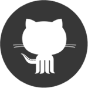

<div class="outer">
    <div class="middle">
        <div class="inner">

            

            <h1 id="name">Apoorv Kothari</h1>

            <div id="title">
              <div class="title-item">Software Engineer</div>
              <div class="title-div"> | </div>
              <div class="title-item">Learner</div>
              <div class="title-div"> | </div>
              <div class="title-item">Entrepreneur</div>
            </div>

            <div id="description-wrapper">

              <div class="description">
                I am a software developer with experience shipping products. My expertise lies in building resilient and highly scalable solutions.
                To me, software engineering begins with a deep understanding of the product requirements and then designing solutions to solve
                those problems. Testing is at the core of this.

                My work has brought me across the application landscape (infra/SRE, BE, mobile, web, and embedded); from which I have gained a
                deeper appreciation of the trade-offs and benefits associated at each layer.
              </div>


              <div class="description">
                I prefer to work with strongly typed and statically complied languages because computers are much better than humans at these
                tasks. To this end my languages of choice are <span class="red">Rust</span>, <span class="red">Scala</span>.

                My platform of choice is <span class="red">Kubernetes</span>.
              </div>

              <div class="description">
                I have made contributions to <a href="https://github.com/rust-lang/rust/pulls?utf8=%E2%9C%93&q=is%3Apr+author%3Atoidiu+">rust-lang</a> and also given <a href="https://vimeo.com/groups/toidiu">talks</a>. I help organize the <a href="https://www.meetup.com/rust-nyc/">rust-nyc</a> meetup.

                The best way to reach me is at the email apoorv[at]toidiu[dot]com
              </div>

              <br><br>
              <div class="description">
                <span class="under">Things I grok:</span><br>
                rust, kubernetes, grpc<br>
                scala, android, java, docker, aws<br>
                squash, biking, fencing, travel, cooking
              </div>

            </div>

            <div id="link-wrapper">
              <a class="link-icon" href="http://www.speakerdeck.com/toidiu">
                  
                  <span class="icon-description">talks</span >
              </a>
              <a class="link-icon" href="http://www.github.com/toidiu">
                  
                  <span class="icon-description">github</span >
              </a>
              <a class="link-icon" href="mailto:apoorv@toidiu.com">
                  
                  <span class="icon-description">e-mail</span >
              </a>
              <a class="link-icon" href="assets/resume.pdf">
                  
                  <span class="icon-description">resume</span >
              </a>
            </div>

        </div>
    </div>
</div>


